Shoot the pictures
I used two sets of photos: one of the kitchen and one of the living room. Each set has three overlapping views.
Set 01 · Kitchen
The kitchen photos overlap around the microwave, stove, and countertop.

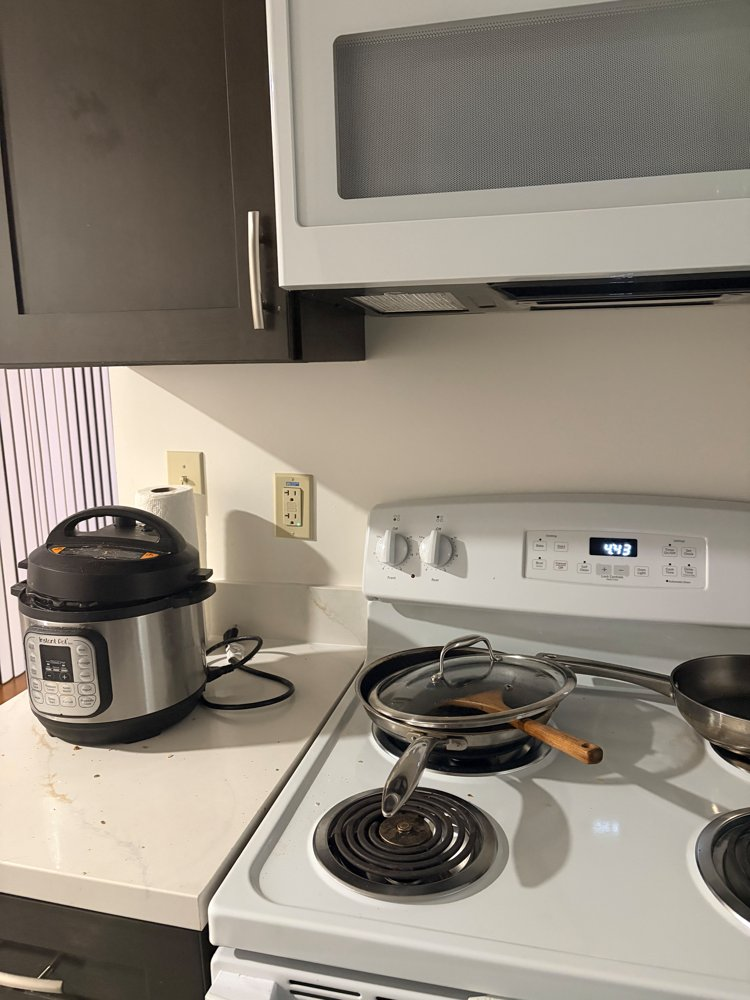


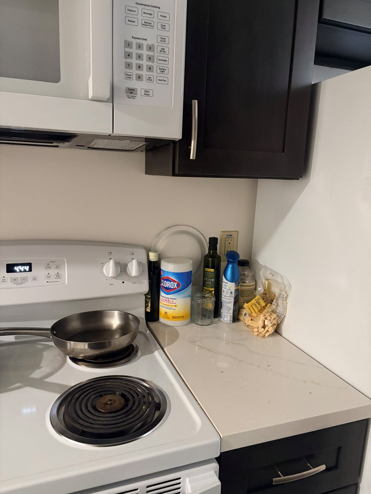
Set 02 · Room
The second set covers the boxes, orange cushion, and couch.


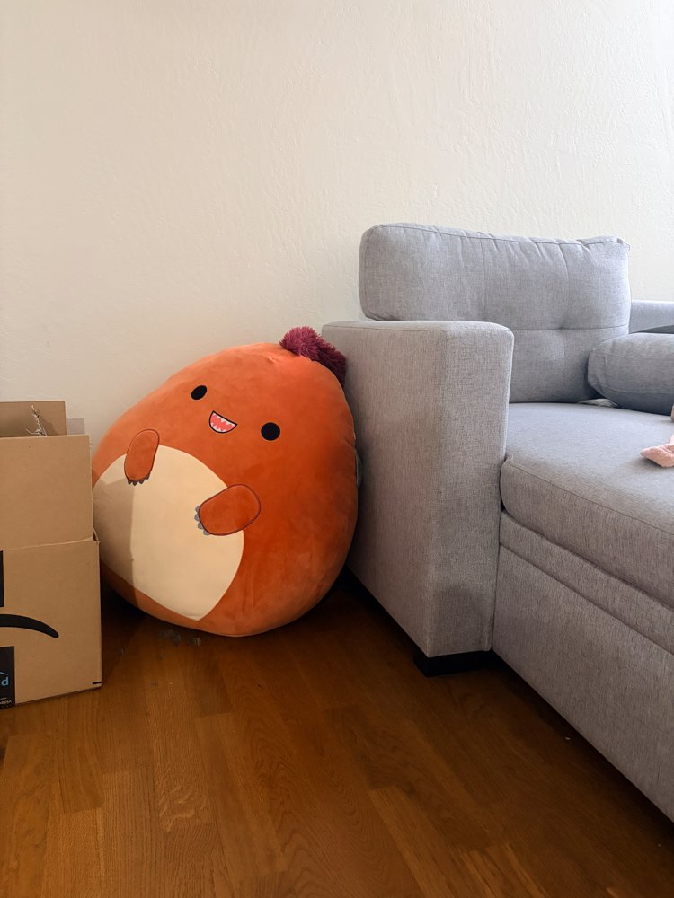

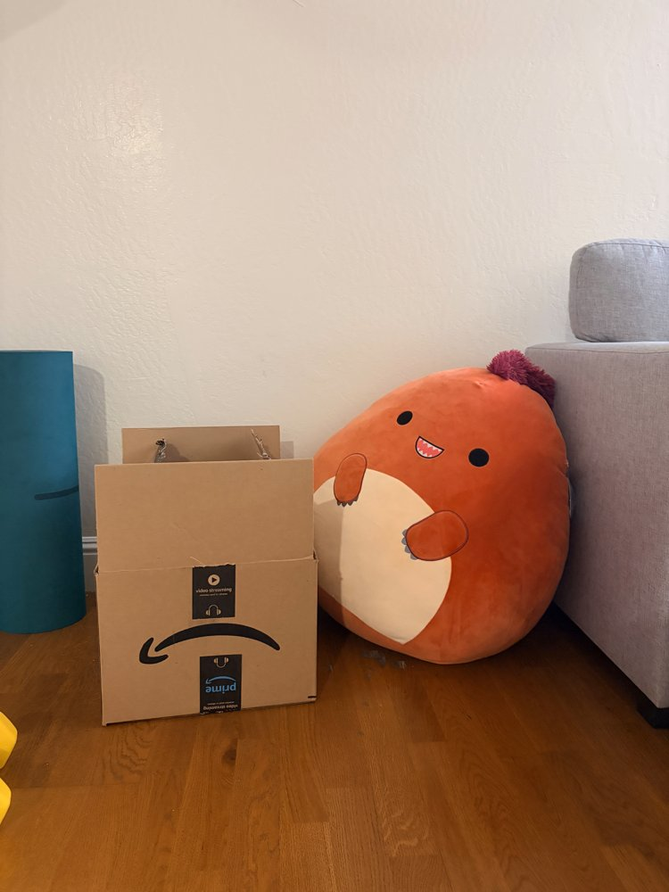
Recover homographies
I represented the mapping between each pair of images with a 3 × 3 homography H. Setting h₃₃ = 1 leaves eight unknowns to solve for.
Solving for H
Each pair of corresponding points gives two equations. I stacked these into Ah = b and used numpy.linalg.lstsq to solve for the eight entries. Before solving, I centered and scaled the points to improve numerical stability, then converted H back to image coordinates.
These matches were selected automatically using SIFT, a ratio test, and RANSAC to remove outliers. I kept points spread across the overlap and passed them to computeH for the final least-squares fit. I used image 2 as the kitchen reference and image 3 as the room reference. The RMSE below measures the distance between the transformed source points and their matches.
Set 1 · image 1 → image 2
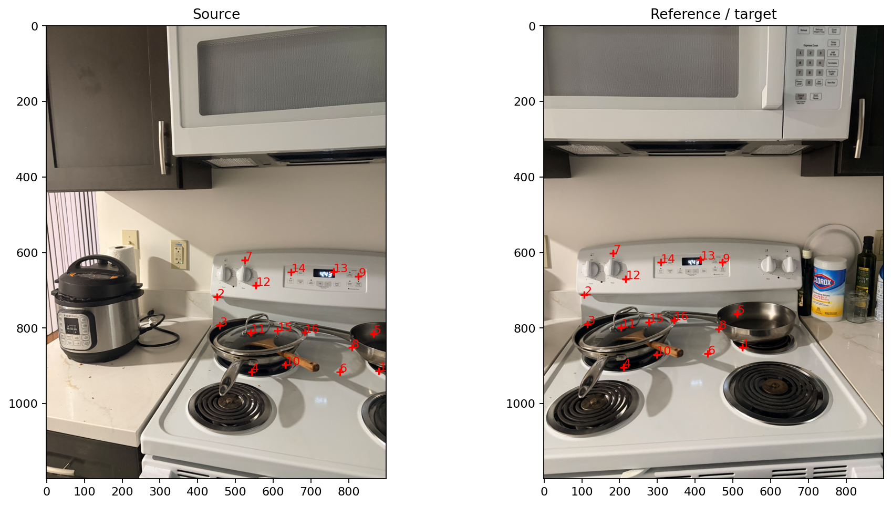
16 matches · reprojection RMSE: 1.136 pixels at a maximum image dimension of 1200 pixels.
Correspondence coordinates · Numerical A and b · Matrix H
Set 1 · image 3 → image 2
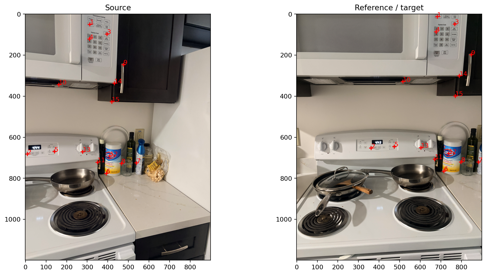
15 matches · reprojection RMSE: 1.064 pixels at a maximum image dimension of 1200 pixels.
Correspondence coordinates · Numerical A and b · Matrix H
Set 2 · image 1 → image 3
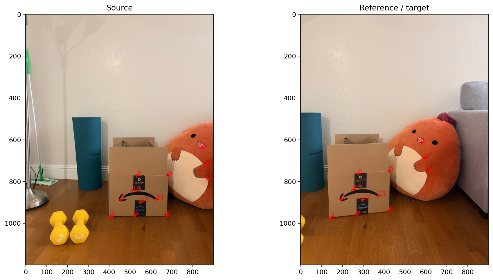
12 matches · reprojection RMSE: 0.816 pixels at a maximum image dimension of 1200 pixels.
Correspondence coordinates · Numerical A and b · Matrix H
Set 2 · image 2 → image 3
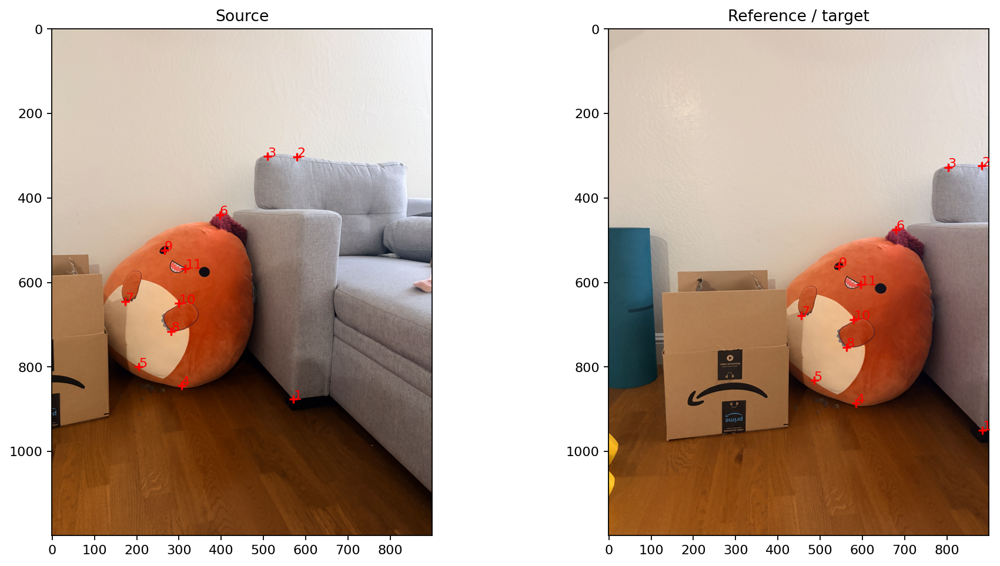
11 matches · reprojection RMSE: 0.892 pixels at a maximum image dimension of 1200 pixels.
Warp & rectify
For each output pixel, I used H⁻¹ to find where to sample the input image. I found the output bounds by transforming the four image corners. A mask tracks which output pixels fall inside the input image, so empty areas are kept separate from actual black pixels.
Two interpolation methods
| Method | Sampling | Expected trade-off |
|---|---|---|
| Nearest neighbor | One rounded source pixel | Less arithmetic; can produce jagged edges and blocky detail. |
| Bilinear | Weighted average of four neighbors | Smoother edges; more arithmetic and possible softening of fine detail. |
I implemented both methods with NumPy. Each comparison uses the same H and output size. The times are medians from five runs and include allocating the output image.
Rectification
For rectification, I used the stove control panel and the front of a cardboard box. The four corners were marked in top-left, top-right, bottom-right, bottom-left order and mapped to a rectangle.
Stove control panel

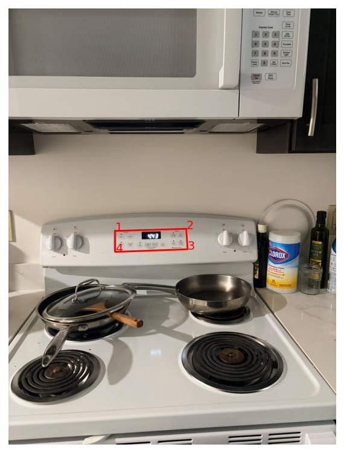

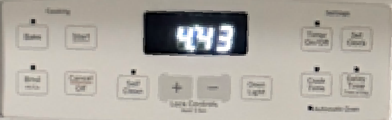


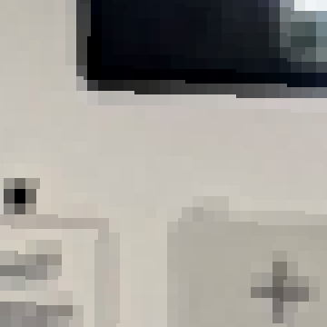

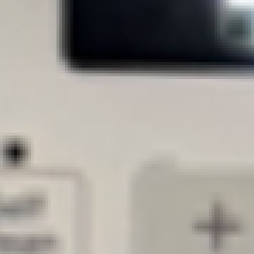
Nearest neighbor: 15.9 ms · Bilinear: 29.0 ms (1.83× the runtime).
Cardboard box front

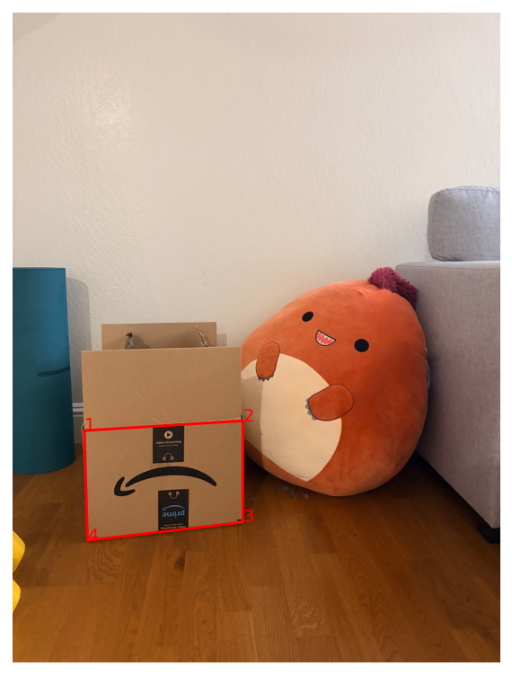

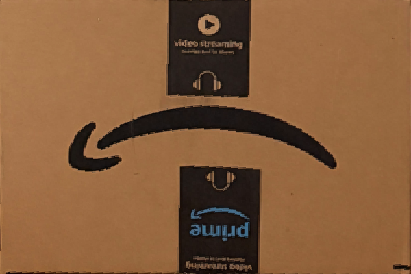


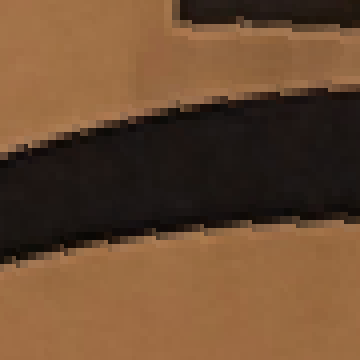

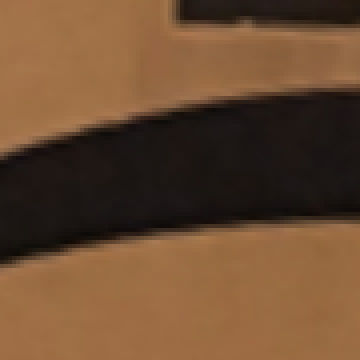
Nearest neighbor: 16.2 ms · Bilinear: 60.9 ms (3.77× the runtime).
Nearest neighbor looks blockier around the lettering and the curved box logo. Bilinear gives smoother edges but also blurs some detail. It took longer in both examples. I enlarged the same crop from each result without smoothing so the pixel differences stay visible. The target proportions are approximate; I did not have measurements of either rectangle.
Blend image mosaics
I warped the photos onto one canvas and blended the overlapping pixels with a weighted average. Each image gets more weight near its center and less near its edges.
Choose the reference frameUse kitchen image 2 or room image 3 as the reference and map the other views into it.
Build one canvasTransform the image corners to find bounds that fit all the views, then inverse-warp each image.
Feather the overlapWarp a weight map with each image, add the weighted colors, and divide by the total weight.
I used the masks to exclude empty pixels from the average. Blending makes the seams less abrupt, but it does not fix misaligned objects.
Kitchen · three views


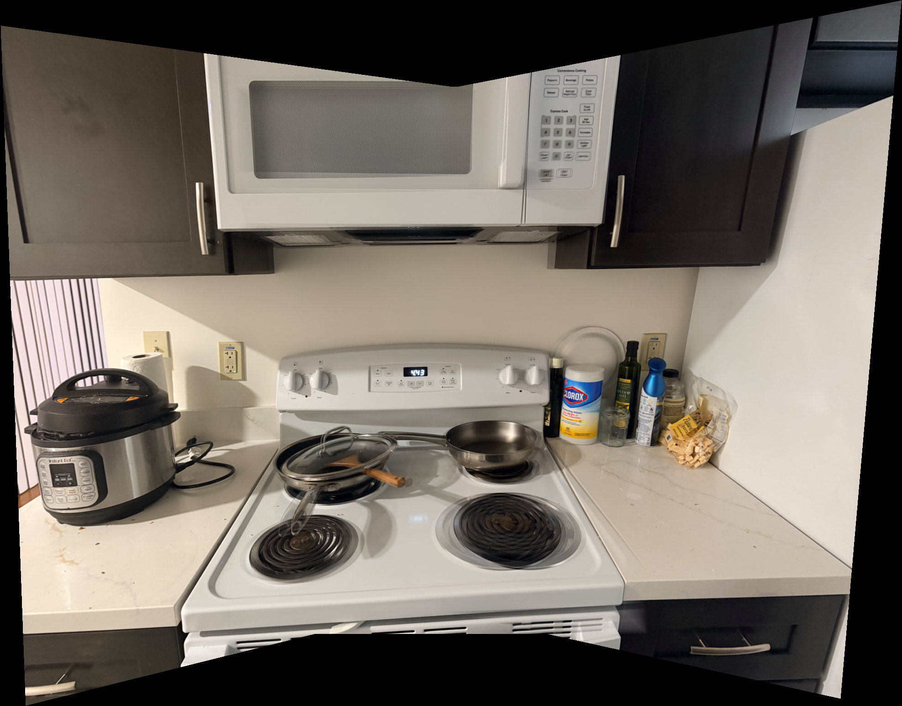
Room · three views


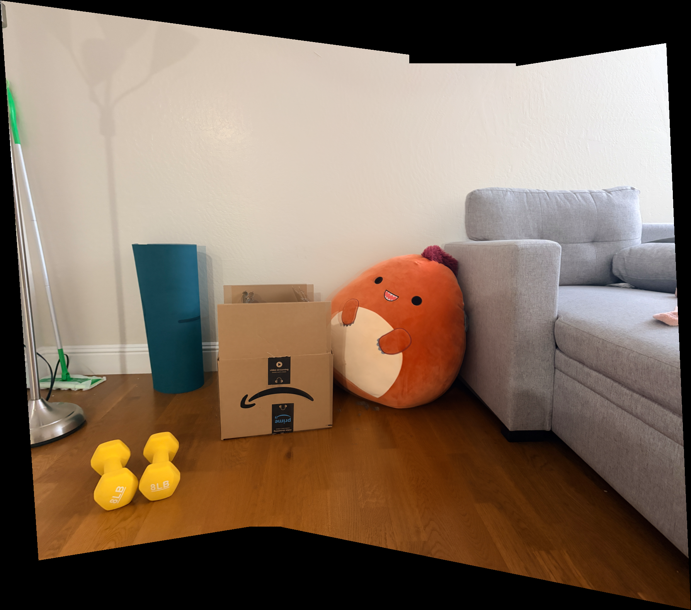
Kitchen · two-view mosaic

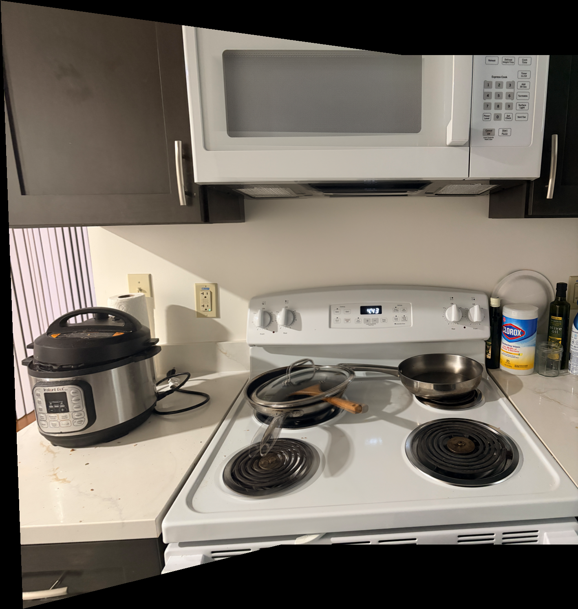
The black borders are areas that none of the photos cover. Some nearby objects have doubled edges, especially in the kitchen. A single homography does not align every depth equally when there is camera translation, and averaging leaves those errors visible. The third result uses only the first two kitchen photos; the three mosaics come from two scenes.
Implementation & resources
The saved point coordinates and recovered matrices are linked in A.2.
I checked the functions with a known homography, identity and translation transforms, and a small example with known bilinear weights. I also checked that blending identical images preserves their values and that collinear correspondences are rejected.